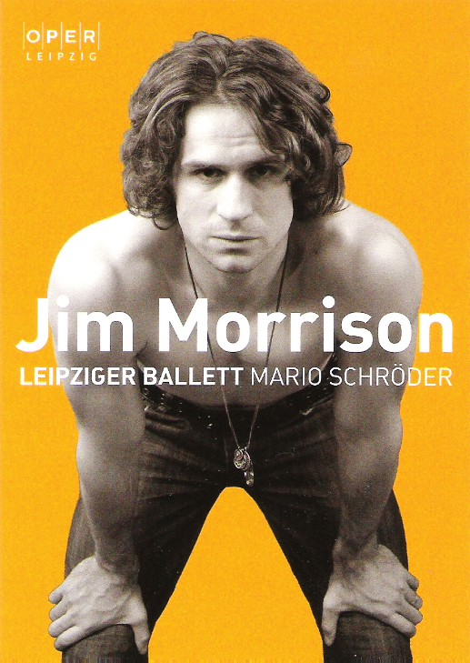

|  |
Ballett an der Leipziger Oper 2011 Mario Schr�der & Leipziger Ballett : Jim Morrison Eine Rocklegende, aber auch eine zerrissene Pers�nlichkeit erobert die B�hnen der Welt und verliert sich im Kampf mit sich selbst. Jim Morrison, grandioser K�nstler, Rebell, sinnlicher Poet, tanzender Schamane, Reisender in der endlosen Nacht lebt im gleichnamigen Ballett 90 Minuten lang auf. 40 Jahre nach dem Tod des Musikers eine Reise in die Welt der Rocklegende, in ein Leben zwischen Rausch, Provokation und Todessehnsucht. Mario Schr�der begibt sich mit seinem Ballett (40 T�nzer aus 23 Nationen) auf der Suche nach diesem Menschen, sp�rt seiner Biografie, seiner sensiblen Poesie und seiner Musik nach. Schon bevor der Vorhang �ffnet, wird das Publikum mit dem charismatischen Star konfrontiert. Lockenpracht, Lederhose, wei�es Hemd, eine geh�rige Portion Melancholie, so hat Morrison sich inszeniert. Martin Svobodnik ist dieser Morrison. Er h�ngt in der Stellung eines Gekreuzigten in den Falten des roten Vorhangs, f�llt zu Boden, kauert sich nieder, wird hineingerissen ins Leben und direkt mit dem Tod konfrontiert. Leichenblass, regungslos und puppenhaft liegt da ein K�rper im gl�sernen Bassin, w�hrend um ihn das Chaos tobt. Morrison dr�ckt ihn herab, kein Luftbl�schen steigt endlose Minuten empor, Bewegungen unter Wasser auf engstem Raum. Leben und Tod liegen nah beieinander. Liebevoll treten diese beiden M�nner mit einander in Verbindung, erwecken sich gegenseitig, bewegen sich synchron und geben einander Ansto�, bis sie �ber die B�hne wirbeln. Bewegung ist Leben. Da sind sie, die zwei Seelen des Jim Morrison. Immer war er �berzeugt, dass in ihm ein Schamane wohne, seit er als Kind einen Verkehrsunfall mit zahllosen verungl�ckten Indianern miterleben musste. Bew�ltigung eines Traumas auch auf der B�hne. Sein zweites Ich - Indianerseele, b�ser und guter Zwilling, Unterbewusstsein - ist immer an seiner Seite. Die beiden M�nner tanzen mal gemeinsam, mal gegeneinander. Das Traumpaar des Abends. Kraftvoll, fast schon akrobatisch fegt dieser Schamane �ber die B�hne und zieht nicht nur Morrison, sondern auch das Publikum in seinen Bann. Oliver Prei�, blond, hell, kurzhaarig, der Gegenentwurf zu Morrison und jedem Indianerklischee, ist die perfekte Erg�nzung des melancholischen, manchmal drogentrunkenen Rockmythos. Es ist weniger das t�nzerisch Ausgefallene der Figur, was da fasziniert, als die Ausstrahlung, die Kraft und Perfektion. Choreograph Mario Schr�der macht das Leben Morrisons, immer nah am Extrem, f�hl- und verstehbar. Die Szenenfolge ist logisch, nimmt den Zuschauer mit in die 60er. Man muss kein Tanzexperte sein, um folgen zu k�nnen, auch kein Morrison-Fan, um die Verweise auf die wichtigsten Stationen seines Lebens zu verstehen. Die Frau, die ihn fast sein Leben lang begleitet, und die, die er heiratet. Die Band The Doors, Vehikel seiner Prominenz. Vietnamveteranen als Verweis auf seine Zeit. Und immer wieder Hippies und Engel, die seinen Weg kreuzen, die reale und die diffuse subjektive Welt - f�r Morrison gleichrangig. Dazu 90 Minuten The Doors, eineinhalb Stunden die unverwechselbare Stimme des Leads�ngers. Keine kann das Zeitgef�hl besser transportieren, steht so sehr f�r die Sehns�chte, auch Trag�dien dieser Nachkriegsgeneration auf der Suche nach alternativen Lebensstilen, neuen Erfahrungen, sich selbst. Doch Schr�ders St�ck driftet nicht ab in eine 60er-Jahre-Collage. Zu sehr sind Tanz und Inszenierung im Heute verankert. Nicht alles �berzeugt. Doch am Ende des Abends z�hlt Anderes: die Leistung der Solisten. Auch die weiblichen Parts von St�phanie Zsitva-Gerbal und Claudia Bernhard sind stark - und die Inszenierung, die mit vielen eindringlichen Bildern aufwartet. Wie das des an zahllosen Gummib�ndern h�ngenden Morrison. Gehalten werden sie von gesichtslosen Figuren, die an ihm ziehen, ihn f�hren wie eine Marionette, auch festhalten. In den Zwischenwelten zwischen Leben und Tod, Realit�t und Rausch. Wer sich ihm n�hert, ihn fassen will, wird mitgefangen in diesem Gewirr aus F�den. An anderer Stelle rieselt der Drogenrausch sanft herab auf die B�hne und erfasst den T�nzer. Svobodnik zeigt mal gelungenes modernes Ballett, mal liefert er, besonders in den ruhigen Momenten, eine perfekte Kopie von Morrisons Bewegungen. "The End" hat der Rockpoet eines seiner St�cke benannt. Wie so oft spielt er darin mit dem Thema Tod. Der hat ihn sein Leben lang fasziniert und begleitet, in seinen Liedtexten und in seinen weniger beachteten Gedichten spiegelt sich das wieder. Das fr�he und bis heute nicht v�llig gekl�rte Ende, ein Garant f�r Unvergesslichkeit, hat auch aus ihm einen Mythos gemacht. Schr�der nimmt dies vorweg, die Fans, die sein Grab belagern, Fotos schie�en per Handy - nur scheinbare Anachronismen. Am Schluss - wie k�nnte es anders sein: "The End". Der Tod als Klammer des Lebens. Jim Morrison ist tot, doch der Mythos vom „K�nig der Eidechsen“ lebt. Eine sehr gelungenen Choreografie, die durch das Publikum mit langem Applaus belohnt wurde.
|
|||

|

|